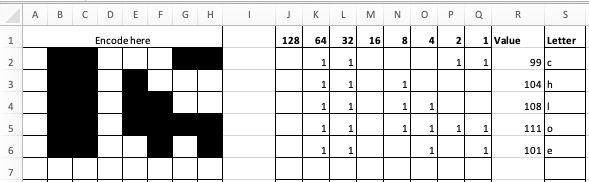

Text encoding, also known as character encoding, refers to the process of digitzing text to different encoding schemes, such as ASCII or Unicode.
This photo demonstrates what text encoding is. Black boxes are represented as 1s, whereas white boxes are left blank.
In addition to this, the photo makes use of binary code (a coding language presented as combinations of 0s and 1s) and presents ASCII letters through their equivalent binary codes.
The above photo is an example of a 4-bit bitmap. This bitmap is composed of a number of different colours, arranged in a combination which, when viewed all together in the correct order, creates an image. In this case, the bitmap has created an image of internet meme Nyan Cat.
Run length encoding, also known as RLE, is a form of lossless data compression. It turns colour and pixels into binary.
This video explains what rle is all about:
--
Chloe, year nine ist